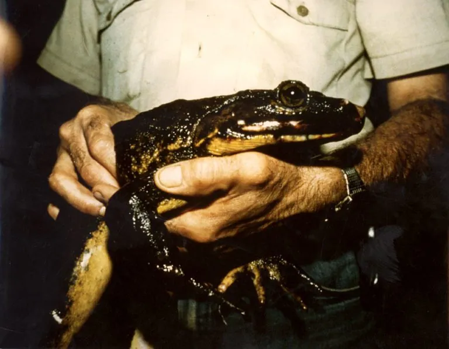

两栖动物 · 动物界
非洲巨蛙 Conraua goliath

世界上体型最大的蛙类，体长可达 30 多厘米、体重超过 3 千克，仅分布于非洲中西部少数河流，属濒危物种。
- 分类
- 门脊索动物门纲两栖纲目无尾目科巨蛙科属巨蛙属
- 栖息环境
- 非洲中西部热带雨林中水质清澈、水流湍急的河流与瀑布附近
- 地理分布
- 喀麦隆和赤道几内亚的少数雨林河流
- 保护级别
- IUCN 濒危（EN）；CITES 附录 I；非中国原产
物种志
非洲巨蛙体长 17–32 厘米，体重 0.6–3 千克，个别可达 3 千克以上，是世界上体型最大的蛙类。它头部宽扁，吻端钝，眼睛较大且突出，背部呈绿褐色或黄褐色，皮肤光滑并带有皱褶，后肢极长而强壮，趾间蹼发达，善于在急流中游泳和跳跃。
它仅分布于喀麦隆和赤道几内亚的少数热带雨林河流，栖息于水质清澈、水流较急的河段和瀑布附近，成体捕食昆虫、溪蟹、蝎子、小鱼和其他蛙类，蝌蚪则以水生植物为食。每年旱季繁殖，雌蛙在溪流石缝间产卵数百至上千枚，蝌蚪在水中生活约 2–3 个月后变态。由于栖息地破坏、宠物贸易和当地人捕食，非洲巨蛙数量下降，被列为濒危物种；它在中国属于外来物种，禁止随意引进和放生。
形态与习性
- 食性昆虫、溪蟹、蝎子、小鱼和其他蛙类
- 体长17–32 cm
- 体重约 0.6–3 kg
- 寿命约 15–20 年
- 繁殖卵生，每次数百至上千枚，约 2–3 个月变态
- 活动节律昼行性，多在河边活动
- 保护CITES 附录 I，属濒危物种
趣味知识
- 非洲巨蛙是世界上最大的蛙类，体长可达 32 厘米、体重超过 3 千克。
- 它的后肢极长而有力，一跃可达数米，是蛙类中的跳远高手。
- 非洲巨蛙被列入国际公约附录 I，国际贸易受到严格禁止。